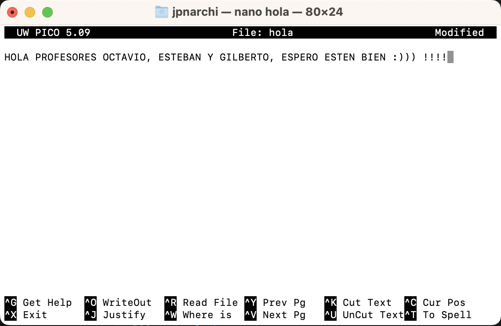

Introducción a la Terminal
La terminal (también conocida como línea de comandos, consola o shell) es una interfaz basada en texto para controlar tu computadora. A diferencia de una interfaz gráfica donde interactúas con elementos visuales, en la terminal escribes comandos que el sistema interpreta y ejecuta.
Aunque puede parecer intimidante al principio, la terminal ofrece mayor control y eficiencia para muchas tareas de programación.
Comandos Básicos de Terminal
Estos son los comandos más utilizados para navegar y manipular archivos:
| Comando | Descripción | Ejemplo |
|---|---|---|
pwd |
Muestra el directorio actual | pwd → /home/usuario/proyectos |
ls |
Lista archivos y directorios | ls -la → muestra archivos ocultos con detalles |
cd |
Cambia de directorio | cd Documents → va a la carpeta Documents |
mkdir |
Crea un nuevo directorio | mkdir proyecto-nuevo |
touch |
Crea un archivo vacío | touch index.html |
rm |
Elimina archivos o directorios | rm archivo.txt o rm -r directorio |
cp |
Copia archivos o directorios | cp archivo.txt copia.txt |
mv |
Mueve o renombra archivos | mv archivo.txt nuevo-nombre.txt |
cat |
Muestra el contenido de un archivo | cat archivo.txt |
echo |
Muestra un texto o variable | echo "Hola mundo" |
Ejemplo de Sesión en Terminal
$ pwd
/home/usuario
$ mkdir proyecto-web
$ cd proyecto-web
$ touch index.html style.css
$ ls
index.html style.css
$ echo "console.log('Hola mundo')" > script.js
$ ls
index.html script.js style.css
$ cat script.js
console.log('Hola mundo')
/home/usuario
$ mkdir proyecto-web
$ cd proyecto-web
$ touch index.html style.css
$ ls
index.html style.css
$ echo "console.log('Hola mundo')" > script.js
$ ls
index.html script.js style.css
$ cat script.js
console.log('Hola mundo')
Comandos Avanzados
Estos comandos son útiles para tareas más específicas:
- grep: Busca patrones en archivos
- find: Busca archivos que coincidan con ciertos criterios
- chmod: Cambia permisos de archivos
- chown: Cambia el propietario de un archivo
- ps: Muestra procesos en ejecución
- kill: Termina procesos
- tar: Comprime/descomprime archivos
- history: Muestra historial de comandos
- ssh: Conecta a servidores remotos
- scp: Copia archivos entre servidores
# Buscar texto en archivos
grep "función" *.js
# Encontrar todos los archivos HTML
find . -name "*.html"
# Cambiar permisos (dar permisos de ejecución)
chmod +x script.sh
grep "función" *.js
# Encontrar todos los archivos HTML
find . -name "*.html"
# Cambiar permisos (dar permisos de ejecución)
chmod +x script.sh
Redirecciones y Pipes
Las redirecciones y pipes son características poderosas que permiten manipular la entrada y salida de comandos:
Operadores de Redirección
>: Redirige la salida a un archivo (sobrescribe)>>: Redirige la salida a un archivo (añade)<: Toma la entrada desde un archivo|: Pipe, envía la salida de un comando como entrada a otro
# Redirigir salida a un archivo
$ echo "# Mi Proyecto" > README.md
# Añadir texto a un archivo existente
$ echo "Este es un proyecto de ejemplo" >> README.md
# Usar pipes para filtrar salida
$ ls -la | grep ".js"
$ echo "# Mi Proyecto" > README.md
# Añadir texto a un archivo existente
$ echo "Este es un proyecto de ejemplo" >> README.md
# Usar pipes para filtrar salida
$ ls -la | grep ".js"
Consejos y Trucos
- Usa la tecla Tab para autocompletar comandos y rutas
- Presiona Ctrl+C para interrumpir un comando en ejecución
- Usa las flechas ↑ y ↓ para navegar por el historial de comandos
- Escribe clear o presiona Ctrl+L para limpiar la pantalla
- Usa man [comando] para ver el manual de un comando específico
- Añade --help al final de un comando para ver opciones de ayuda